| A1a | 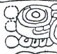 | Distance Number: [1 Winals], 3 K'ins |
| A1b | Tzolk'in: 8 Ahaw | |
| B1a | 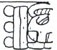 | Haab: 13 Sek |
| B1b | 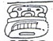 | 7 tuns completed |
| A2a | 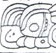 | i u-ti "and then it happened" |
| A2b | 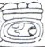 | Tzolk'in: 11 K'aban |
| B2a | 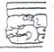 | Haab: 10 Sotz |
| B2b | 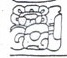 | hu-bi-hi"they were throw down" |
| C1a | |
u tok' pakal "his flint and shield" |
| C1b | 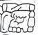 | Nuun Ujol Chaak |
| D1 | nab-ha u-???-le "a lake was made of his/their (blood?)" | |
| C2 | 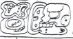 | witz-ha u ujol-li "a mountain was his/their skulls" |
| D2 | 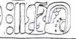 | 13 Tzuk |
| E1 | Mutul Nal "mutul person/place" | |
| F1a | u KAB'-hi "he caused it to be done" | |
| F1b | B'alah Chan | |
| E2a | 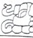 | K'awiil |
| E2b | 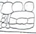 | K'uhul Mutul Ahaw"Holy Lord of Mutul" |
| F2 | 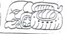 | Ba-ka-ba |